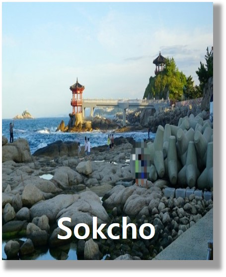

속초
Sokcho
약 50m 길이의 구름다리를 건너면 바다와 마주할 수 있는 속초 영금정.
일출 명소로도 알려진 이곳은 동해안의 시원한 절경을 감상할 수 있는
최적의 장소이다.
옛날 항구의 고유 분위기는 사라졌지만, '새우튀김
골목' 으로 재탄생한 대포항은
여전히 속초 대표 방문 코스! 아바이 순대
로 유명한 아바이마을도 빼놓을 수 없는 인기 여행지이다.
일
월
화
수
목
금
토